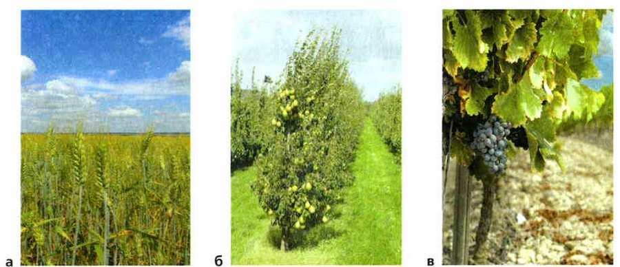
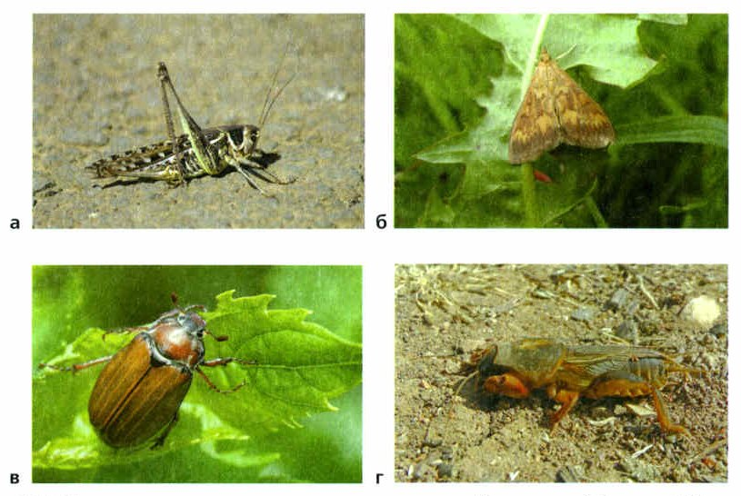
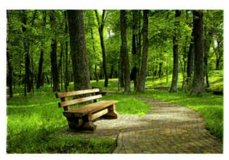

Как появились искусственные сообщества
Давным-давно люди собирали дикие растения и охотились на диких животных — и почти не меняли природные сообщества. Примерно 10 тысяч лет назад люди научились выращивать съедобные растения и разводить домашних животных. Еды стало больше, жить стало легче.
Людей становилось всё больше, и еды требовалось всё больше. Чтобы выращивать растения и разводить животных, человек вырубает леса, распахивает луга, осушает болота. На месте природных сообществ появляются искусственные сообщества — их создаёт и поддерживает человек. В природе растение окружено множеством других растений, животных, микроорганизмов. В искусственном сообществе такого разнообразия нет.
Чаще всего встречаются агросообщества (от греч. агрос — поле): плодовые сады, огороды, поля, виноградники (рис. 107), животноводческие фермы с пастбищами. Они нужны, чтобы получать продукты. Сейчас искусственные сообщества занимают примерно десятую часть суши.
Агросообщества дают человеку нужные продукты, и урожай можно увеличивать. Но живут они только при постоянной заботе: человек следит за плодородием почвы, поливает растения, защищает растения и животных от вредителей и болезней.
Создание искусственных сообществ. В далёком прошлом человек собирал дикорастущие растения и охотился на диких животных. При этом он не оказывал серьёзного воздействия на природные сообщества. Примерно 10 тыс. лет назад люди научились выращивать съедобные растения, стали одомашнивать и разводить животных. Дополнительные источники пищи улучшили условия жизни людей.
С увеличением численности человечества возрастали потребности в продуктах питания. Для выращивания растений и разведения животных человек вырубает леса, распахивает луга, осушает болота. Вместо природных сообществ создаются искусственные сообщества — это сообщества организмов, создаваемые и поддерживаемые человеком. В естественных условиях растения растут в сообществе с множеством других растений, животных и микроорганизмов. В искусственном сообществе такого разнообразия нет.
Среди искусственных сообществ наиболее распространены агросообщества (от греч. агрос — поле). Примерами таких сообществ являются плодовые сады, огороды, поля, виноградники (рис. 107), животноводческие комплексы с прилегающими к ним искусственными пастбищами. Они создаются для получения растениеводческой и животноводческой продукции. В настоящее время искусственные сообщества занимают примерно 1/10 часть поверхности суши.
Преимуществами агросообществ перед природными сообществами является производство необходимых для человека продуктов растениеводства и животноводства и большие возможности увеличения продуктивности. Однако они могут существовать только при постоянной заботе о плодородии почвы, обеспечении растений влагой, охране выращиваемых растений и животных от неблагоприятных воздействий других организмов.

▲ Что человек получает с каждого из этих сообществ?
1. Что такое искусственное сообщество? Приведи примеры.
2. Каково значение агросообществ в жизни человека?
Поле
Поле — распаханный участок земли, где выращивают травянистые растения. В нашей стране на многих полях растут зерновые: пшеница, рожь, ячмень, овёс, кукуруза, гречиха. Больше всего сеют пшеницу.
Поле похоже на луг, но живых организмов на нём намного меньше. Главный производитель органических веществ здесь — растение, которое выращивают.
Рядом с культурными растениями растут сорные растения. Они выносливее, забирают из почвы много влаги и минеральных веществ. На пшеничном поле обычны овсюг, метлица, осот, василёк. На растениях паразитируют грибы: головня, спорынья, ржавчинные грибы. От головни колосья пшеницы будто обгорели, и зёрна в них не образуются. От ржавчинных грибов листья бледнеют и покрываются рыже-коричневыми пятнами.
Множество культурных растений привлекает множество насекомых (рис. 108). На пшенице живёт клоп вредная черепашка: он прокалывает стебли и пьёт соки. Если на квадратном метре 3—5 таких клопов, повреждена почти половина побегов. Когда наливаются колосья, клопы и их личинки сосут соки из зёрен — зёрна сморщиваются, и из такой муки хлеб не испечь. Ещё на полях живут полевые мыши, полёвки и другие растительноядные зверьки: они едят зёрна и зелёные части пшеницы.
Сорняки, вредители и болезни могут уничтожить весь урожай. Поэтому люди пропалывают сорняки, собирают или уничтожают вредных насекомых, предупреждают болезни растений.
Пшеница создаёт много органических веществ, но урожай увозят. На поле остаётся мало растительных остатков, перегноя образуется мало, и почва становится беднее. Чтобы на следующий год снова был урожай, на поля вносят удобрения. Без постоянной заботы человека поле долго не проживёт.
Поле как искусственное сообщество. Поле — это распаханный участок земной поверхности, на котором выращивают травянистые растения. В нашей стране на многих полях выращивают зерновые культуры — пшеницу, рожь, ячмень, овёс, кукурузу, гречиху. Среди них первое место занимает пшеница.
Поле как искусственное сообщество имеет сходство с лугом, но не так богато разнообразием живых организмов. Основным производителем органических веществ на поле является выращиваемая культура.
На полях культурным растениям сопутствуют и сорные растения. Они выносливее культурных растений, поглощают из почвы много влаги и минеральных веществ. На пшеничном поле обычны такие сорные растения, как овсюг, метлица, осот, василёк. На культурных растениях паразитируют различные грибы. Пшеница поражается головнёй, спорыньёй, ржавчинными грибами. При поражении головнёй колосья пшеницы становятся словно обгоревшими и зёрна в них не образуются. Ржавчинные грибы поражают листья пшеницы, которые становятся бледно-зелёными с рыжевато-коричневыми пятнами.
Огромное количество культурных растений на полях привлекает множество насекомых, кормящихся ими (рис. 108). На пшеничных полях обитает клоп вредная черепашка. Он прокалывает стебли пшеницы и питается её соками. При численности 3—5 клопов на 1 м² повреждается около половины побегов пшеницы. Во время образования колосьев клопы и их личинки сосут соки из зёрен. В результате зёрна сморщиваются. Мука из таких зёрен не пригодна для выпечки хлеба. На пшеничных полях живут полевые мыши, полёвки и другие растительноядные зверьки. Они питаются зёрнами пшеницы и её зелёными частями.
Сорные растения, вредители и болезни могут уничтожить все посевы культурных растений. Поэтому для получения хорошего урожая люди выпалывают сорные растения, собирают или уничтожают с помощью специальных средств насекомых, наносящих вред культурным растениям, предупреждают возникновение заболеваний.
Выращиваемые на полях культурные растения образуют много органических веществ. После уборки урожая на полях остаётся мало растительных остатков, в почве образуется мало перегноя и её плодородие уменьшается. Чтобы на следующий год вновь получить высокий урожай, человек должен вносить на поля удобрения. Поэтому поле без постоянной заботы человека долго существовать не может.

▲ Рассмотри медведку: зачем ей такие широкие передние лапы?
3. Чем поле отличается от луга?
4. Почему на поле каждый год нужны удобрения? Вспомни гумус из §18.
Лесопарки и городские парки
Лесопарки — зелёные зоны вокруг городов. Человек их окультурил и приспособил для отдыха множества людей (рис. 109). Большие территории с деревьями внутри города называют городскими парками. В отличие от настоящих лесов, парки и лесопарки не поддерживают себя сами.
В парках обычно нет зарослей кустов, обломанных веток, гниющих упавших деревьев. По тропинкам каждый день проходит много людей. Поэтому почва в парках сильно утоптана, в ней мало воздуха. Корням деревьев и почвенным организмам так жить трудно. Многие многолетние травы гибнут, когда их вытаптывают.
В парках сажают разные деревья. Выбирают те, что хорошо очищают воздух, дают плоды и семена для животных и просто красивы. Важны в парках птицы: они не дают размножиться насекомым, которые вредят деревьям.
Лесопарки и городские парки как искусственные сообщества. Лесопарки — это зелёные зоны вокруг городов, окультуренные человеком и приспособленные для массового отдыха (рис. 109). Древесные насаждения в городах, занимающие обширные территории и служащие для отдыха, называют городскими парками. В отличие от естественных лесов городские парки и лесопарки не являются саморегулирующимися системами.
В лесопарках и городских парках обычно отсутствуют заросли кустарников, обломанные ветки и гниющие поваленные деревья. По многочисленным тропам ежедневно проходит большое количество людей. Поэтому почва в парках сильно уплотнена и содержит мало воздуха. Такие условия неблагоприятны для корней деревьев и организмов-почвообразователей. От вытаптывания погибают многие многолетние травы.
В создаваемых человеком парках и лесопарках высаживаются разные деревья. При этом учитывается их способность к очистке воздуха, образованию плодов и семян, необходимых для питания различных животных, эстетическая привлекательность для людей. Большое значение в жизни лесопарков имеют птицы. Они регулируют численность насекомых, наносящих вред деревьям.

▲ Чего здесь нет, что обязательно есть в настоящем лесу?
Сначала сделай опыт и запиши, что увидела.
5. Почему видовое разнообразие в лесопарке меньше, чем в лесу?
6. Зачем в парках нужны птицы?
Особенности агросообществ
Природное сообщество устойчиво благодаря разнообразию видов: продуцентов, консументов и редуцентов (§21). В агросообществах всё упрощено, видов намного меньше.
Человек сам решает, какие растения выращивать и каких животных разводить, — чтобы получить больше урожая и продуктов.
Но агросообщества не умеют сами себя восстанавливать и регулировать — у них нет саморегуляции. Они могут погибнуть от массового размножения вредителей или от болезней. Без человека поле или огород живёт не больше года, ягодник — 3—4 года, плодовый сад — 20—30 лет. Потом они исчезают, и на их месте вырастает природное сообщество.
Особенности агросообществ. Известно, что важным свойством природного сообщества является его устойчивость за счёт видового биологического разнообразия продуцентов, консументов и редуцентов. По сравнению с естественными природными сообществами в агросообществах упрощена структура и резко снижено видовое разнообразие.
Исходя из хозяйственных потребностей человек сам определяет состав выращиваемых растений и разводимых животных. Это делается для получения высоких урожаев сельскохозяйственных растений и наибольшего количества продуктов животноводства.
Однако агросообщества не способны к самовосстановлению и саморегулированию, подвержены угрозе гибели от массового размножения вредителей или болезней. Искусственные сообщества не обладают биологической устойчивостью и не могут существовать в течение длительного времени. Без участия человека агросообщества зерновых и овощных растений существуют не более года, ягодных растений — 3—4, плодовых садов — 20—30 лет. Затем они исчезают и замещаются естественными.
7. Почему искусственные сообщества неустойчивы?
8. Что станет с огородом, если за ним год никто не будет ухаживать?
Итоги и «Моя лаборатория»
Искусственное сообщество · Агросообщество · Поле · Лесопарк
- Что такое искусственное сообщество?
- Каково значение агросообществ в жизни человека?
- Чем поле отличается от луга?
- Почему видовое разнообразие в лесопарке меньше, чем в лесу?
- Почему искусственные сообщества являются неустойчивыми?
- Используя рис. 108, расскажите о многоядных вредителях культурных растений.
Почему в искусственных сообществах цепи питания более короткие, чем в природных сообществах?
Изучение искусственного сообщества аквариума и его обитателей
Цель: найти в аквариуме те же закономерности, что и в природном сообществе.
Что нужно: аквариум с водными растениями и животными.
1. Определи, какие организмы живут в аквариуме.
2. Какие экологические факторы действуют в аквариуме? Подходят ли они его жителям?
3. Составь схемы всех возможных пищевых цепей в аквариуме.
4. Какие из этих цепей есть на самом деле в твоём аквариуме?
5. Сравни аквариум с настоящим водоёмом. Чем они похожи? Почему различаются?
6. Сделай вывод и оформи его презентацией.
Цель работы: выявить некоторые закономерности, свойственные природным сообществам.
Материалы и оборудование: аквариум с водными растениями и животными.
Ход работы
1. Определите, какие организмы живут в аквариуме.
2. Определите, какие экологические факторы характерны для данного сообщества, и проанализируйте, насколько они соответствуют требованиям, необходимым для нормальной жизни обитателей аквариума.
3. Составьте схемы всех возможных пищевых цепей в аквариумном сообществе.
4. Выясните, какие из этих пищевых цепей имеют место в вашем аквариуме.
5. Сравните аквариум с естественным водоёмом. В чём заключается сходство этих сообществ? Чем обусловлены их различия?
6. По результатам работы сделайте вывод и оформите его в виде презентации.
Проверь себя
Ошиблась — не страшно, попробуй другую кнопку.
Огород в Ягодном
Создан и поддерживается человеком.
Поле подсолнухов
Агросообщество.
Болото из похода
Живёт само.
Аквариум
Без человека не проживёт.
Луг с клевером и ромашками
Многолетние травы растут сами.
Плодовый сад
Без человека — 20—30 лет.
Еловый лес в тайге
Саморегулирующаяся система.
Пшеница
Её выращивают.
Василёк
Растёт среди колосьев.
Клоп вредная черепашка
Сосёт соки пшеницы.
Подсолнечник
Из семян — масло.
Осот
Забирает влагу и минеральные вещества.
Медведка
Подгрызает корни.
1. Когда люди научились выращивать растения и разводить животных?
2. Что значит греческое «агрос»?
3. Какая культура на полях нашей страны занимает первое место?
4. Почему почва в парках бедна воздухом?
5. Сколько проживёт плодовый сад без человека?
6. Кто в парке защищает деревья от вредных насекомых?
Расскажи вслух
Искусственные сообщества
- 10 тысяч лет назад люди начали выращивать растения и разводить животных.
- Искусственное сообщество создаёт и поддерживает человек; самые распространённые — агросообщества.
- Плюсы — продукты; минус — нужна постоянная забота. Мой пример — огород в Ягодном.
Поле
- Распаханная земля, зерновые культуры, первое место — пшеница.
- Сорняки, грибы-паразиты, вредители (клоп вредная черепашка).
- Урожай увозят, перегноя мало — нужны удобрения.
Лесопарки и парки
- Зелёные зоны для отдыха; сами себя не поддерживают.
- Нет кустов и упавших деревьев, почва утоптана, травы гибнут.
- Деревья выбирают с пользой; птицы защищают от вредителей.
Почему агросообщества неустойчивы
- Мало видов, упрощённая структура.
- Нет саморегуляции, угроза вредителей и болезней.
- Без человека: огород — год, ягодник — 3—4 года, сад — 20—30 лет.